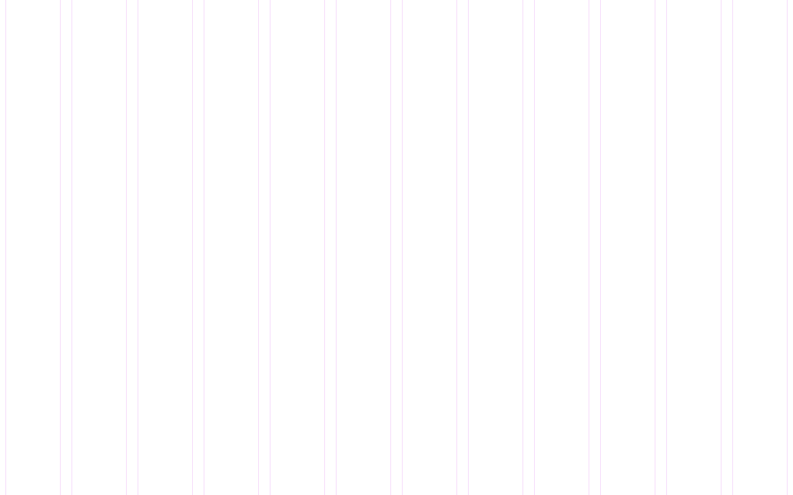
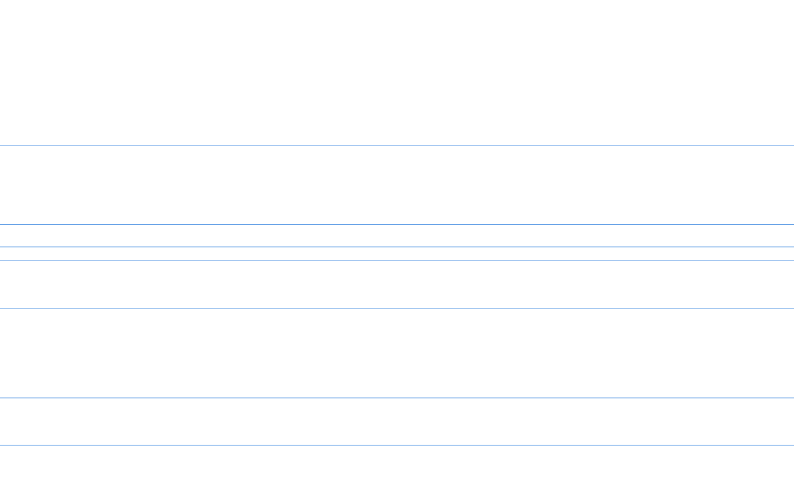

<!DOCTYPE html>
<html lang="fr">
  <head>
    <meta charset="utf-8" />
    <meta name="viewport" content="width=device-width, initial-scale = 1.0">
    <meta http-equiv="X-UA-Compatible" content="ie=edge">
    <title>Melody Maker</title>
    <!--build:css styles/styles.min.css-->
    <link rel="stylesheet" href="styles/css/main.css" />
  
    <!--endbuild-->
  </head>
  <body>

    <!--  -->
    <!--  -->
    <svg xmlns="http://www.w3.org/2000/svg" version="1.1" width="560" height="400" style="display: none">
      <path id="jelly" class="jelly-path" d="M234 50C326.88 50 326 79.43 372 110S510 139.76999999999998 510 230S373.3 320 326 320 234.42000000000002 349.7 188 350C95.1 350 50 319.15 50 260S96 199.7 96 140 141.12 50 234 50z"/>
    </svg>
    <!-- <video class="img" src="assets/videos/minions.mp4" alt="" autoplay></video> -->
    
    <container>

    </container>
    <div class="loader">
        <div class="loader__block loader__block--1"></div>
        <div class="loader__block loader__block--2"></div>
        <div class="loader__block loader__block--3"></div>
        <div class="loader__block loader__block--4"></div>
        <div class="loader__box"></div>
    </div>
  
    <!--build:js scripts/main.min.js -->
    <script src="scripts/library/TweenMax.min.js"></script>
    <script src="scripts/jelly.js"></script>
    <script src="scripts/DOMLoader.js"></script>
    <script src="scripts/ViewsController.js"></script>
    <script src="scripts/OrganicButton.js"></script>
    <script src="scripts/WavesCanvas.js"></script>
    <script src="scripts/MusicalCanvas.js"></script>
    <script src="scripts/DrumKit.js"></script>
    <script src="scripts/Oscillator.js"></script>
    <script src="scripts/views/HomeController.js"></script>
    <script src="scripts/Calibration.js"></script>
    <script src="scripts/views/CalibrationController.js"></script>
    <script src="scripts/views/DashboardController.js"></script>
    <script src="scripts/views/RecordingDrum.js"></script>
    <script src="scripts/Rooter.js"></script>
    <script src="scripts/PlaySound.js"></script>
    <script src="scripts/script.js"></script>
    <!--endbuild-->
  </body>
</html>